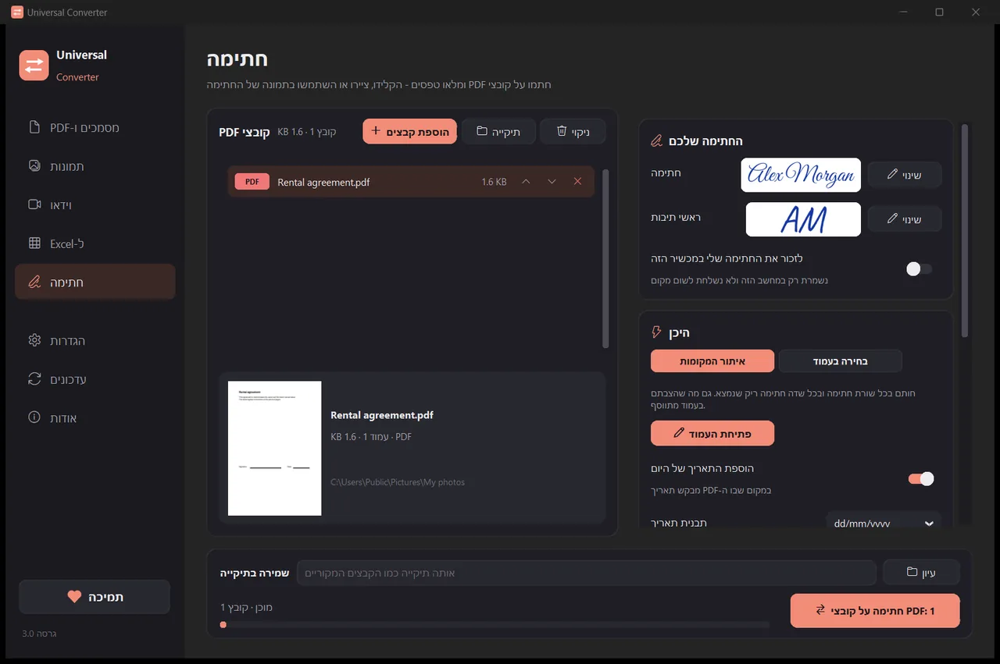

חתימה על PDF
צרו את החתימה פעם אחת: הקלידו את שמכם ובחרו סגנון, ציירו אותה בעכבר או באצבע, או השתמשו בתמונה שלה על נייר. Universal Converter מוצא את שורות החתימה ואת שדות החתימה הריקים, או שאתם לוחצים או מקישים בעמוד במקום שבו היא צריכה להופיע. הוא שומר עותק חתום ומשאיר את המקור כפי שהיה. זוהי חתימה אלקטרונית גלויה, לא חתימה דיגיטלית מבוססת אישור.
חינם · Windows 10 ו-11, 64 ביט · דוח סריקת וירוסיםWindows חוסם את ההורדה או את האפליקציה? הורידו אותה מ-Microsoft Store: אותה אפליקציה חינמית, ו-Windows סומך עליה.
הורדה ל-Mac Apple silicon, macOS 12 ומעלה
איך מתקינים ומעדכנים
- פתחו את קובץ ה-.dmg שהורדתם וגררו את Universal Converter לתיקיית היישומים.
- פתחו את האפליקציה. בפעם הראשונה macOS חוסם אותה כי היא אינה חתומה על ידי Apple: לחצו על "סיום".
- פתחו את הגדרות המערכת > פרטיות ואבטחה, גללו למטה, לחצו על "פתח בכל זאת" והזינו את הסיסמה. עושים זאת פעם אחת בלבד.
עדכונים: אם תאשרו זאת כשהאפליקציה נפתחת לראשונה, היא בודקת גרסאות חדשות בכל הפעלה, מאמתת את החתימה הדיגיטלית שלהן ומתקינה אותן מתי שתבחרו.
הורדה ל-Android Android 10 ומעלה
איך מתקינים ומעדכנים
- הקישו על "הורדה ל-Android" בטלפון.
- פתחו את הקובץ שהורד. אם Android שואל, אפשרו לדפדפן או למנהל הקבצים להתקין אפליקציות.
- הקישו על "התקנה".
עדכונים: האפליקציה בודקת בערך פעם ביום ומודיעה כשגרסה חדשה מוכנה. הורידו אותה באותה דרך והתקינו אותה מעל הישנה; ההגדרות שלכם נשמרות.
איך עושים את זה
- פתחו את Universal Converter ובחרו חתימה בצד שמאל.
- גררו את הקבצים או תיקייה שלמה לחלון, או לחצו על "הוספת קבצים".
- לחצו על שינוי ליד חתימה כדי ליצור את החתימה, ואז בחרו איתור המקומות, או בחירה בעמוד ולחצו במקום הרצוי.
- לחצו על כפתור החתימה. כל קובץ נשמר בשם name_signed.pdf ליד המקור או בתיקייה שתבחרו.

למה במצב לא מקוון?
Universal Converter עושה את העבודה במכשיר שלכם. הקבצים שלכם נשארים פרטיים, קבצים גדולים אינם בעיה, והכול עובד בלי חיבור לאינטרנט.
עוד דברים שהוא יודע לעשות
- המרת PDF ל-Word
- המרת מסמכי Word ל-PDF
- איחוד כמה קבצים ל-PDF אחד
- דחיסת PDF לגודל שתבחרו
- המרת עמודי PDF לתמונות JPG
- הפיכת מסמך סרוק לקובץ Word הניתן לעריכה
- המרת תמונות בין JPG, PNG, WEBP ועוד
- שינוי גודל של תמונות או הקטנתן לגודל קובץ
- איחוד תמונות ל-PDF אחד
- העתקת הטקסט מתמונה (OCR)
- דחיסת סרטון בלי להעלות אותו
- המרת סרטונים בין MP4, MKV, WebM, MOV ו-AVI
- שמירת הצליל של סרטון כ-MP3
- יצירת GIF מסרטון
- העברת טבלאות מ-PDF ל-Excel
- המרת דף חשבון בנק PDF ל-Excel
- חילוץ טבלאות מחשבוניות PDF ל-Excel
- מילוי טופס PDF